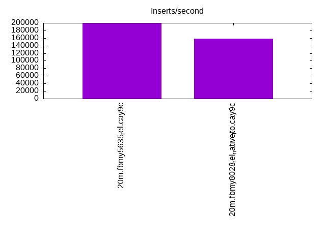
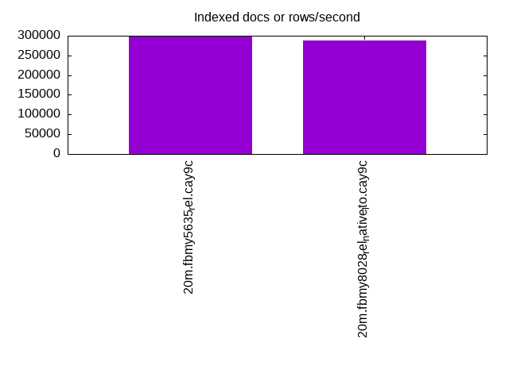
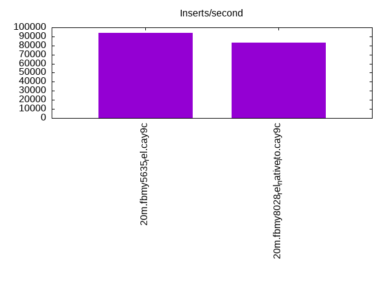
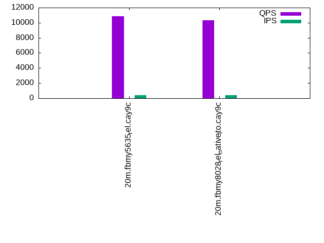
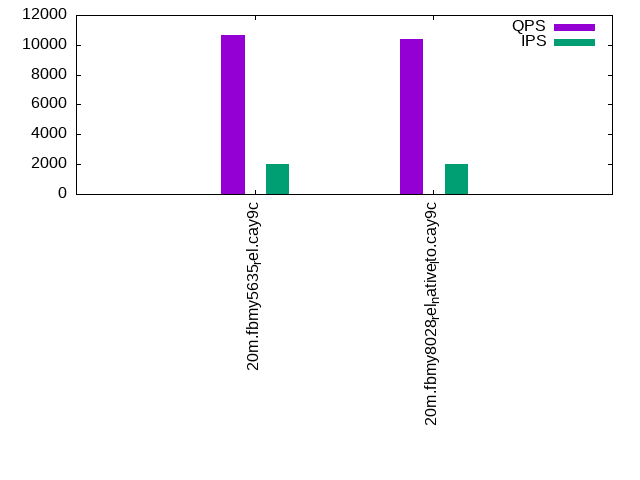
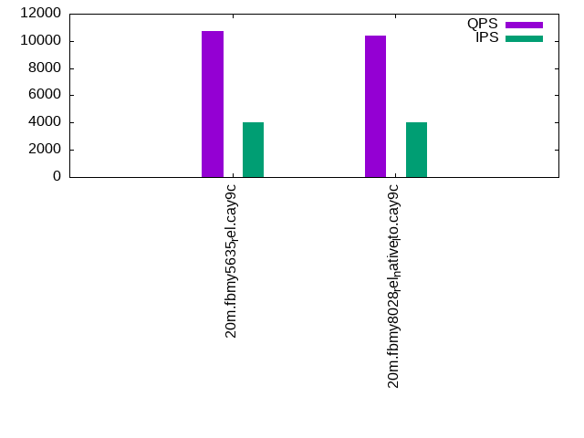

This is a report for the insert benchmark with 20M docs and 4 client(s). It is generated by scripts (bash, awk, sed) and Tufte might not be impressed. An overview of the insert benchmark is here and a short update is here. Below, by DBMS, I mean DBMS+version.config. An example is my8020.c10b40 where my means MySQL, 8020 is version 8.0.20 and c10b40 is the name for the configuration file.
The test server has 8 AMD cores, 16G RAM and an NVMe SSD. It is described here as the Beelink. The benchmark was run with 4 clients and there were 1 or 2 connections per client (1 for queries, 1 for inserts). The benchmark loads 20M rows without secondary indexes, creates secondary indexes, loads another 20M rows then does 3 read+write tests for one hour each that do queries as fast as possible with 100, 500 and then 1000 writes/second/client concurrent with the queries. There is one table per client. The database is cached by the storage engine and the only IO is for writes. Clients and the DBMS share one server. The per-database configs are in the per-database subdirectories here.
The tested DBMS are:
The numbers are inserts/s for l.i0 and l.i1, indexed docs (or rows) /s for l.x and queries/s for q*.2. The values are the average rate over the entire test for inserts (IPS) and queries (QPS). The range of values for IPS and QPS is split into 3 parts: bottom 25%, middle 50%, top 25%. Values in the bottom 25% have a red background, values in the top 25% have a green background and values in the middle have no color. A gray background is used for values that can be ignored because the DBMS did not sustain the target insert rate. Red backgrounds are not used when the minimum value is within 80% of the max value.
| dbms | l.i0 | l.x | l.i1 | q100.1 | q500.1 | q1000.1 |
|---|---|---|---|---|---|---|
| 20m.fbmy5635_rel.cay9c | 198020 | 300000 | 93897 | 10862 | 10637 | 10712 |
| 20m.fbmy8028_rel_native_lto.cay9c | 158730 | 287143 | 83333 | 10357 | 10405 | 10419 |
This table has relative throughput, throughput for the DBMS relative to the DBMS in the first line, using the absolute throughput from the previous table.
| dbms | l.i0 | l.x | l.i1 | q100.1 | q500.1 | q1000.1 |
|---|---|---|---|---|---|---|
| 20m.fbmy5635_rel.cay9c | 1.00 | 1.00 | 1.00 | 1.00 | 1.00 | 1.00 |
| 20m.fbmy8028_rel_native_lto.cay9c | 0.80 | 0.96 | 0.89 | 0.95 | 0.98 | 0.97 |
This lists the average rate of inserts/s for the tests that do inserts concurrent with queries. For such tests the query rate is listed in the table above. The read+write tests are setup so that the insert rate should match the target rate every second. Cells that are not at least 95% of the target have a red background to indicate a failure to satisfy the target.
| dbms | q100.1 | q500.1 | q1000.1 |
|---|---|---|---|
| fbmy5635_rel.cay9c | 399 | 1994 | 3989 |
| fbmy8028_rel_native_lto.cay9c | 399 | 1994 | 3989 |
| target | 400 | 2000 | 4000 |
l.i0: load without secondary indexes. Graphs for performance per 1-second interval are here.
Average throughput:
Insert response time histogram: each cell has the percentage of responses that take <= the time in the header and max is the max response time in seconds. For the max column values in the top 25% of the range have a red background and in the bottom 25% of the range have a green background. The red background is not used when the min value is within 80% of the max value.
| dbms | 256us | 1ms | 4ms | 16ms | 64ms | 256ms | 1s | 4s | 16s | gt | max |
|---|---|---|---|---|---|---|---|---|---|---|---|
| fbmy5635_rel.cay9c | 99.755 | 0.229 | 0.003 | 0.013 | 0.102 | ||||||
| fbmy8028_rel_native_lto.cay9c | 99.290 | 0.504 | 0.193 | 0.013 | 0.137 |
Performance metrics for the DBMS listed above. Some are normalized by throughput, others are not. Legend for results is here.
ips qps rps rmbps wps wmbps rpq rkbpq wpi wkbpi csps cpups cspq cpupq dbgb1 dbgb2 rss maxop p50 p99 tag 198020 0 0 0.0 121.1 51.6 0.000 0.000 0.001 0.267 19918 72.6 0.101 29 0.9 1.9 0.4 0.102 55359 34462 20m.fbmy5635_rel.cay9c 158730 0 0 0.0 111.8 44.3 0.000 0.000 0.001 0.286 16041 67.2 0.101 34 0.7 1.9 0.7 0.137 42853 8890 20m.fbmy8028_rel_native_lto.cay9c
l.x: create secondary indexes.
Average throughput:
Performance metrics for the DBMS listed above. Some are normalized by throughput, others are not. Legend for results is here.
ips qps rps rmbps wps wmbps rpq rkbpq wpi wkbpi csps cpups cspq cpupq dbgb1 dbgb2 rss maxop p50 p99 tag 300000 0 1 0.0 134.0 56.1 0.000 0.000 0.000 0.191 834 48.4 0.003 13 1.4 2.4 2.1 0.003 NA NA 20m.fbmy5635_rel.cay9c 287143 0 1 0.0 116.8 47.5 0.000 0.000 0.000 0.170 797 46.8 0.003 13 1.4 2.7 2.2 0.010 NA NA 20m.fbmy8028_rel_native_lto.cay9c
l.i1: continue load after secondary indexes created. Graphs for performance per 1-second interval are here.
Average throughput:
Insert response time histogram: each cell has the percentage of responses that take <= the time in the header and max is the max response time in seconds. For the max column values in the top 25% of the range have a red background and in the bottom 25% of the range have a green background. The red background is not used when the min value is within 80% of the max value.
| dbms | 256us | 1ms | 4ms | 16ms | 64ms | 256ms | 1s | 4s | 16s | gt | max |
|---|---|---|---|---|---|---|---|---|---|---|---|
| fbmy5635_rel.cay9c | 99.635 | 0.353 | 0.004 | 0.007 | 0.108 | ||||||
| fbmy8028_rel_native_lto.cay9c | 99.208 | 0.684 | 0.100 | 0.007 | 0.117 |
Performance metrics for the DBMS listed above. Some are normalized by throughput, others are not. Legend for results is here.
ips qps rps rmbps wps wmbps rpq rkbpq wpi wkbpi csps cpups cspq cpupq dbgb1 dbgb2 rss maxop p50 p99 tag 93897 0 10 1.2 169.6 69.4 0.000 0.013 0.002 0.756 20530 74.4 0.219 63 4.7 6.5 2.3 0.108 24039 16688 20m.fbmy5635_rel.cay9c 83333 0 18 2.2 165.0 65.8 0.000 0.027 0.002 0.809 17825 74.4 0.214 71 3.6 5.5 2.7 0.117 21184 15683 20m.fbmy8028_rel_native_lto.cay9c
q100.1: range queries with 100 insert/s per client. Graphs for performance per 1-second interval are here.
Average throughput:
Query response time histogram: each cell has the percentage of responses that take <= the time in the header and max is the max response time in seconds. For max values in the top 25% of the range have a red background and in the bottom 25% of the range have a green background. The red background is not used when the min value is within 80% of the max value.
| dbms | 256us | 1ms | 4ms | 16ms | 64ms | 256ms | 1s | 4s | 16s | gt | max |
|---|---|---|---|---|---|---|---|---|---|---|---|
| fbmy5635_rel.cay9c | 12.373 | 87.619 | 0.008 | 0.001 | 0.009 | ||||||
| fbmy8028_rel_native_lto.cay9c | 8.859 | 91.130 | 0.010 | 0.001 | 0.013 |
Insert response time histogram: each cell has the percentage of responses that take <= the time in the header and max is the max response time in seconds. For max values in the top 25% of the range have a red background and in the bottom 25% of the range have a green background. The red background is not used when the min value is within 80% of the max value.
| dbms | 256us | 1ms | 4ms | 16ms | 64ms | 256ms | 1s | 4s | 16s | gt | max |
|---|---|---|---|---|---|---|---|---|---|---|---|
| fbmy5635_rel.cay9c | 99.771 | 0.229 | 0.014 | ||||||||
| fbmy8028_rel_native_lto.cay9c | 99.729 | 0.236 | 0.035 | 0.017 |
Performance metrics for the DBMS listed above. Some are normalized by throughput, others are not. Legend for results is here.
ips qps rps rmbps wps wmbps rpq rkbpq wpi wkbpi csps cpups cspq cpupq dbgb1 dbgb2 rss maxop p50 p99 tag 399 10862 23 0.3 7.7 2.1 0.002 0.025 0.019 5.313 40805 50.6 3.757 373 2.9 4.7 6.7 0.009 2701 2397 20m.fbmy5635_rel.cay9c 399 10357 9 0.1 6.6 1.5 0.001 0.012 0.016 3.886 39224 51.1 3.787 395 2.8 4.9 6.4 0.013 2589 2046 20m.fbmy8028_rel_native_lto.cay9c
q500.1: range queries with 500 insert/s per client. Graphs for performance per 1-second interval are here.
Average throughput:
Query response time histogram: each cell has the percentage of responses that take <= the time in the header and max is the max response time in seconds. For max values in the top 25% of the range have a red background and in the bottom 25% of the range have a green background. The red background is not used when the min value is within 80% of the max value.
| dbms | 256us | 1ms | 4ms | 16ms | 64ms | 256ms | 1s | 4s | 16s | gt | max |
|---|---|---|---|---|---|---|---|---|---|---|---|
| fbmy5635_rel.cay9c | 10.160 | 89.802 | 0.036 | 0.002 | nonzero | 0.019 | |||||
| fbmy8028_rel_native_lto.cay9c | 8.196 | 91.752 | 0.048 | 0.003 | nonzero | 0.018 |
Insert response time histogram: each cell has the percentage of responses that take <= the time in the header and max is the max response time in seconds. For max values in the top 25% of the range have a red background and in the bottom 25% of the range have a green background. The red background is not used when the min value is within 80% of the max value.
| dbms | 256us | 1ms | 4ms | 16ms | 64ms | 256ms | 1s | 4s | 16s | gt | max |
|---|---|---|---|---|---|---|---|---|---|---|---|
| fbmy5635_rel.cay9c | 97.094 | 2.881 | 0.025 | 0.047 | |||||||
| fbmy8028_rel_native_lto.cay9c | 95.885 | 3.993 | 0.121 | 0.001 | 0.065 |
Performance metrics for the DBMS listed above. Some are normalized by throughput, others are not. Legend for results is here.
ips qps rps rmbps wps wmbps rpq rkbpq wpi wkbpi csps cpups cspq cpupq dbgb1 dbgb2 rss maxop p50 p99 tag 1994 10637 0 0.0 7.8 2.2 0.000 0.002 0.004 1.104 39838 51.2 3.745 385 3.1 3.4 8.9 0.019 2622 2349 20m.fbmy5635_rel.cay9c 1994 10405 0 0.0 8.1 2.2 0.000 0.000 0.004 1.141 39172 51.9 3.765 399 3.1 3.6 8.7 0.018 2589 2127 20m.fbmy8028_rel_native_lto.cay9c
q1000.1: range queries with 1000 insert/s per client. Graphs for performance per 1-second interval are here.
Average throughput:
Query response time histogram: each cell has the percentage of responses that take <= the time in the header and max is the max response time in seconds. For max values in the top 25% of the range have a red background and in the bottom 25% of the range have a green background. The red background is not used when the min value is within 80% of the max value.
| dbms | 256us | 1ms | 4ms | 16ms | 64ms | 256ms | 1s | 4s | 16s | gt | max |
|---|---|---|---|---|---|---|---|---|---|---|---|
| fbmy5635_rel.cay9c | 9.188 | 90.704 | 0.099 | 0.009 | nonzero | 0.025 | |||||
| fbmy8028_rel_native_lto.cay9c | 6.996 | 92.868 | 0.125 | 0.010 | nonzero | 0.022 |
Insert response time histogram: each cell has the percentage of responses that take <= the time in the header and max is the max response time in seconds. For max values in the top 25% of the range have a red background and in the bottom 25% of the range have a green background. The red background is not used when the min value is within 80% of the max value.
| dbms | 256us | 1ms | 4ms | 16ms | 64ms | 256ms | 1s | 4s | 16s | gt | max |
|---|---|---|---|---|---|---|---|---|---|---|---|
| fbmy5635_rel.cay9c | 88.571 | 11.376 | 0.053 | 0.048 | |||||||
| fbmy8028_rel_native_lto.cay9c | 93.031 | 6.841 | 0.127 | 0.001 | 0.076 |
Performance metrics for the DBMS listed above. Some are normalized by throughput, others are not. Legend for results is here.
ips qps rps rmbps wps wmbps rpq rkbpq wpi wkbpi csps cpups cspq cpupq dbgb1 dbgb2 rss maxop p50 p99 tag 3989 10712 14 0.8 16.0 5.1 0.001 0.075 0.004 1.300 39242 53.2 3.664 397 3.8 5.0 10.5 0.025 2637 2301 20m.fbmy5635_rel.cay9c 3989 10419 17 0.7 14.4 4.3 0.002 0.069 0.004 1.112 38725 53.6 3.717 412 4.0 5.4 10.7 0.022 2590 2141 20m.fbmy8028_rel_native_lto.cay9c
l.i0: load without secondary indexes
Performance metrics for all DBMS, not just the ones listed above. Some are normalized by throughput, others are not. Legend for results is here.
ips qps rps rmbps wps wmbps rpq rkbpq wpi wkbpi csps cpups cspq cpupq dbgb1 dbgb2 rss maxop p50 p99 tag 198020 0 0 0.0 121.1 51.6 0.000 0.000 0.001 0.267 19918 72.6 0.101 29 0.9 1.9 0.4 0.102 55359 34462 20m.fbmy5635_rel.cay9c 158730 0 0 0.0 111.8 44.3 0.000 0.000 0.001 0.286 16041 67.2 0.101 34 0.7 1.9 0.7 0.137 42853 8890 20m.fbmy8028_rel_native_lto.cay9c
l.x: create secondary indexes
Performance metrics for all DBMS, not just the ones listed above. Some are normalized by throughput, others are not. Legend for results is here.
ips qps rps rmbps wps wmbps rpq rkbpq wpi wkbpi csps cpups cspq cpupq dbgb1 dbgb2 rss maxop p50 p99 tag 300000 0 1 0.0 134.0 56.1 0.000 0.000 0.000 0.191 834 48.4 0.003 13 1.4 2.4 2.1 0.003 NA NA 20m.fbmy5635_rel.cay9c 287143 0 1 0.0 116.8 47.5 0.000 0.000 0.000 0.170 797 46.8 0.003 13 1.4 2.7 2.2 0.010 NA NA 20m.fbmy8028_rel_native_lto.cay9c
l.i1: continue load after secondary indexes created
Performance metrics for all DBMS, not just the ones listed above. Some are normalized by throughput, others are not. Legend for results is here.
ips qps rps rmbps wps wmbps rpq rkbpq wpi wkbpi csps cpups cspq cpupq dbgb1 dbgb2 rss maxop p50 p99 tag 93897 0 10 1.2 169.6 69.4 0.000 0.013 0.002 0.756 20530 74.4 0.219 63 4.7 6.5 2.3 0.108 24039 16688 20m.fbmy5635_rel.cay9c 83333 0 18 2.2 165.0 65.8 0.000 0.027 0.002 0.809 17825 74.4 0.214 71 3.6 5.5 2.7 0.117 21184 15683 20m.fbmy8028_rel_native_lto.cay9c
q100.1: range queries with 100 insert/s per client
Performance metrics for all DBMS, not just the ones listed above. Some are normalized by throughput, others are not. Legend for results is here.
ips qps rps rmbps wps wmbps rpq rkbpq wpi wkbpi csps cpups cspq cpupq dbgb1 dbgb2 rss maxop p50 p99 tag 399 10862 23 0.3 7.7 2.1 0.002 0.025 0.019 5.313 40805 50.6 3.757 373 2.9 4.7 6.7 0.009 2701 2397 20m.fbmy5635_rel.cay9c 399 10357 9 0.1 6.6 1.5 0.001 0.012 0.016 3.886 39224 51.1 3.787 395 2.8 4.9 6.4 0.013 2589 2046 20m.fbmy8028_rel_native_lto.cay9c
q500.1: range queries with 500 insert/s per client
Performance metrics for all DBMS, not just the ones listed above. Some are normalized by throughput, others are not. Legend for results is here.
ips qps rps rmbps wps wmbps rpq rkbpq wpi wkbpi csps cpups cspq cpupq dbgb1 dbgb2 rss maxop p50 p99 tag 1994 10637 0 0.0 7.8 2.2 0.000 0.002 0.004 1.104 39838 51.2 3.745 385 3.1 3.4 8.9 0.019 2622 2349 20m.fbmy5635_rel.cay9c 1994 10405 0 0.0 8.1 2.2 0.000 0.000 0.004 1.141 39172 51.9 3.765 399 3.1 3.6 8.7 0.018 2589 2127 20m.fbmy8028_rel_native_lto.cay9c
q1000.1: range queries with 1000 insert/s per client
Performance metrics for all DBMS, not just the ones listed above. Some are normalized by throughput, others are not. Legend for results is here.
ips qps rps rmbps wps wmbps rpq rkbpq wpi wkbpi csps cpups cspq cpupq dbgb1 dbgb2 rss maxop p50 p99 tag 3989 10712 14 0.8 16.0 5.1 0.001 0.075 0.004 1.300 39242 53.2 3.664 397 3.8 5.0 10.5 0.025 2637 2301 20m.fbmy5635_rel.cay9c 3989 10419 17 0.7 14.4 4.3 0.002 0.069 0.004 1.112 38725 53.6 3.717 412 4.0 5.4 10.7 0.022 2590 2141 20m.fbmy8028_rel_native_lto.cay9c
Insert response time histogram
256us 1ms 4ms 16ms 64ms 256ms 1s 4s 16s gt max tag 0.000 0.000 99.755 0.229 0.003 0.013 0.000 0.000 0.000 0.000 0.102 fbmy5635_rel.cay9c 0.000 0.000 99.290 0.504 0.193 0.013 0.000 0.000 0.000 0.000 0.137 fbmy8028_rel_native_lto.cay9c
TODO - determine whether there is data for create index response time
Insert response time histogram
256us 1ms 4ms 16ms 64ms 256ms 1s 4s 16s gt max tag 0.000 0.000 99.635 0.353 0.004 0.007 0.000 0.000 0.000 0.000 0.108 fbmy5635_rel.cay9c 0.000 0.000 99.208 0.684 0.100 0.007 0.000 0.000 0.000 0.000 0.117 fbmy8028_rel_native_lto.cay9c
Query response time histogram
256us 1ms 4ms 16ms 64ms 256ms 1s 4s 16s gt max tag 12.373 87.619 0.008 0.001 0.000 0.000 0.000 0.000 0.000 0.000 0.009 fbmy5635_rel.cay9c 8.859 91.130 0.010 0.001 0.000 0.000 0.000 0.000 0.000 0.000 0.013 fbmy8028_rel_native_lto.cay9c
Insert response time histogram
256us 1ms 4ms 16ms 64ms 256ms 1s 4s 16s gt max tag 0.000 0.000 99.771 0.229 0.000 0.000 0.000 0.000 0.000 0.000 0.014 fbmy5635_rel.cay9c 0.000 0.000 99.729 0.236 0.035 0.000 0.000 0.000 0.000 0.000 0.017 fbmy8028_rel_native_lto.cay9c
Query response time histogram
256us 1ms 4ms 16ms 64ms 256ms 1s 4s 16s gt max tag 10.160 89.802 0.036 0.002 nonzero 0.000 0.000 0.000 0.000 0.000 0.019 fbmy5635_rel.cay9c 8.196 91.752 0.048 0.003 nonzero 0.000 0.000 0.000 0.000 0.000 0.018 fbmy8028_rel_native_lto.cay9c
Insert response time histogram
256us 1ms 4ms 16ms 64ms 256ms 1s 4s 16s gt max tag 0.000 0.000 97.094 2.881 0.025 0.000 0.000 0.000 0.000 0.000 0.047 fbmy5635_rel.cay9c 0.000 0.000 95.885 3.993 0.121 0.001 0.000 0.000 0.000 0.000 0.065 fbmy8028_rel_native_lto.cay9c
Query response time histogram
256us 1ms 4ms 16ms 64ms 256ms 1s 4s 16s gt max tag 9.188 90.704 0.099 0.009 nonzero 0.000 0.000 0.000 0.000 0.000 0.025 fbmy5635_rel.cay9c 6.996 92.868 0.125 0.010 nonzero 0.000 0.000 0.000 0.000 0.000 0.022 fbmy8028_rel_native_lto.cay9c
Insert response time histogram
256us 1ms 4ms 16ms 64ms 256ms 1s 4s 16s gt max tag 0.000 0.000 88.571 11.376 0.053 0.000 0.000 0.000 0.000 0.000 0.048 fbmy5635_rel.cay9c 0.000 0.000 93.031 6.841 0.127 0.001 0.000 0.000 0.000 0.000 0.076 fbmy8028_rel_native_lto.cay9c